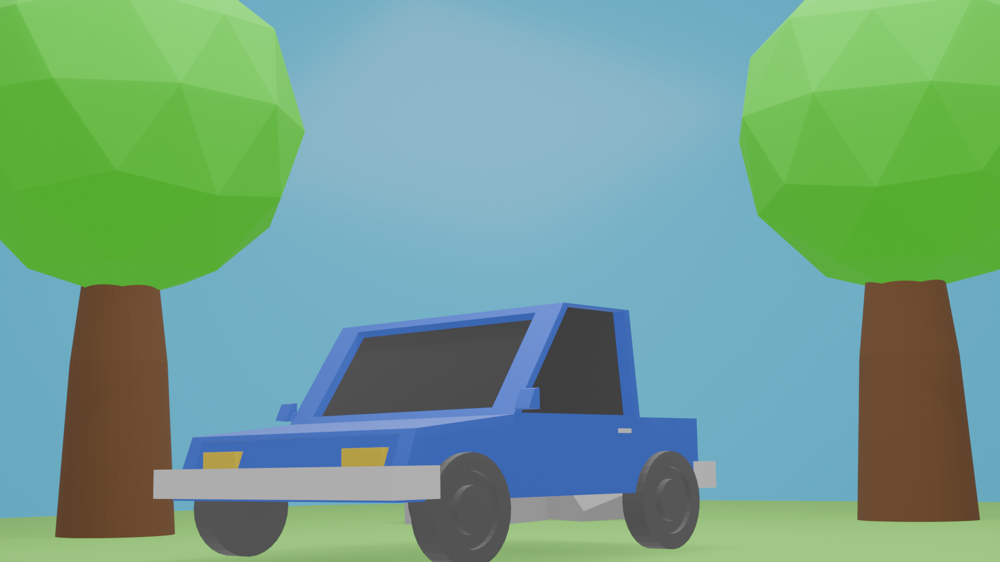

This model was created by following a Blender tutorial, with several additional modifications and experiments to explore different modelling techniques.
This asset is licensed under Creative Commons Attribution 4.0 International (CC BY 4.0).
You are free to share, modify, and use this model for personal or commercial projects, provided that appropriate credit is given.